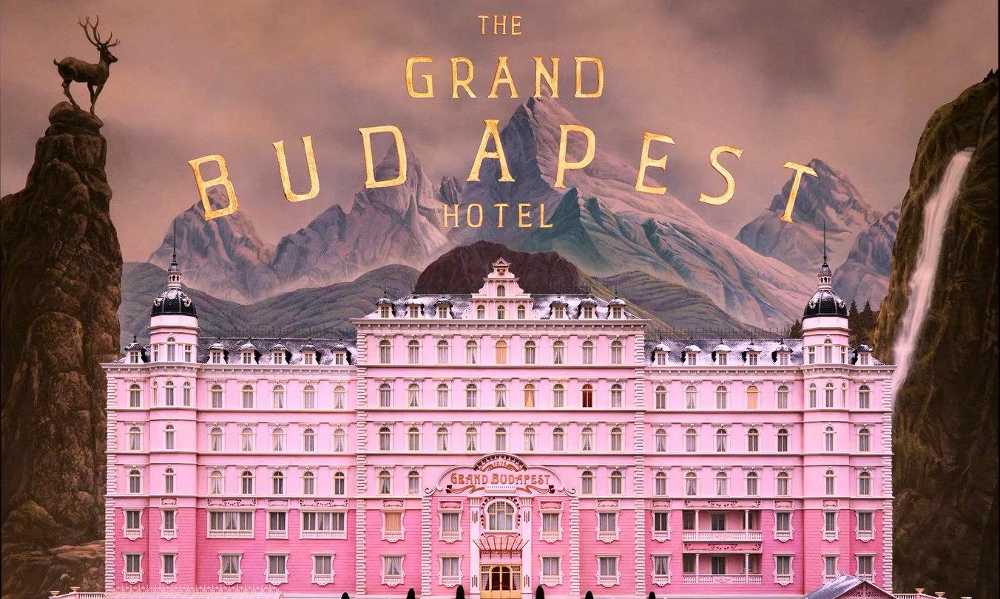

Welcome!

This website is dedicated to the movie "The Grand Budapest Hotel" by Wes Anderson. It was flimed from January to March of 2013 and was released at Feburary 6th of 2014 in Berlin International Flim Festival. The movie gathered a lot of attention and made unexpected success of $174,801,324 worldwide box office, which is very unusual for an art movie. It also won many awards from various prestigious awards ceremonies. Below is some of the remarkable awards it received.
Remarkable Awards
|
Academy Awards (Oscar)
|
BAFTA Awards
|
Critics Choice Awards
|
Other
|